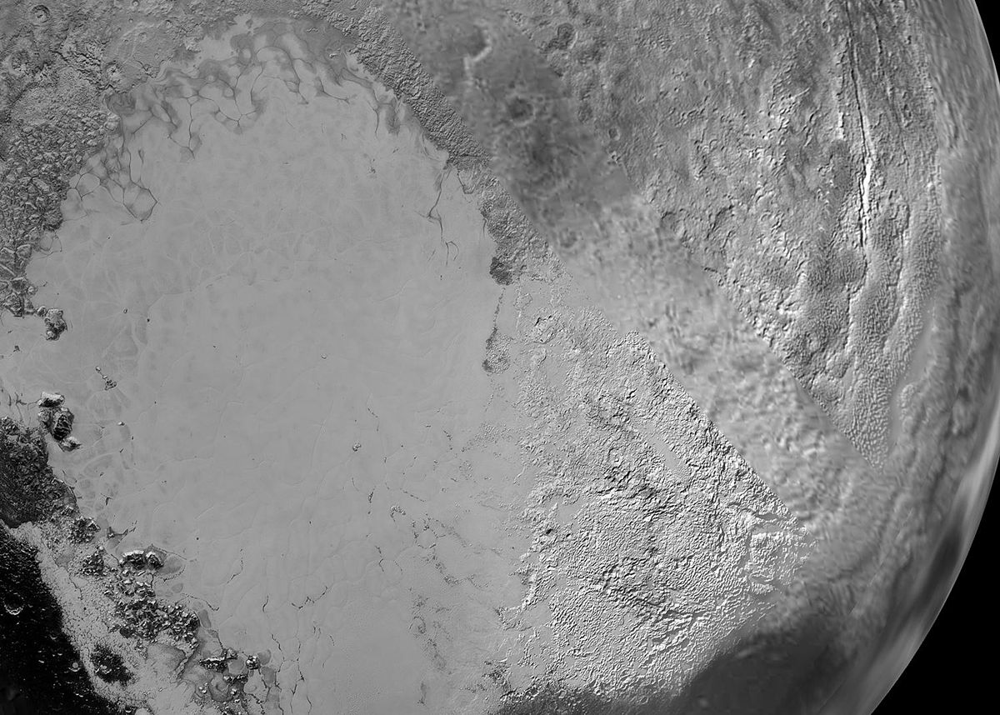
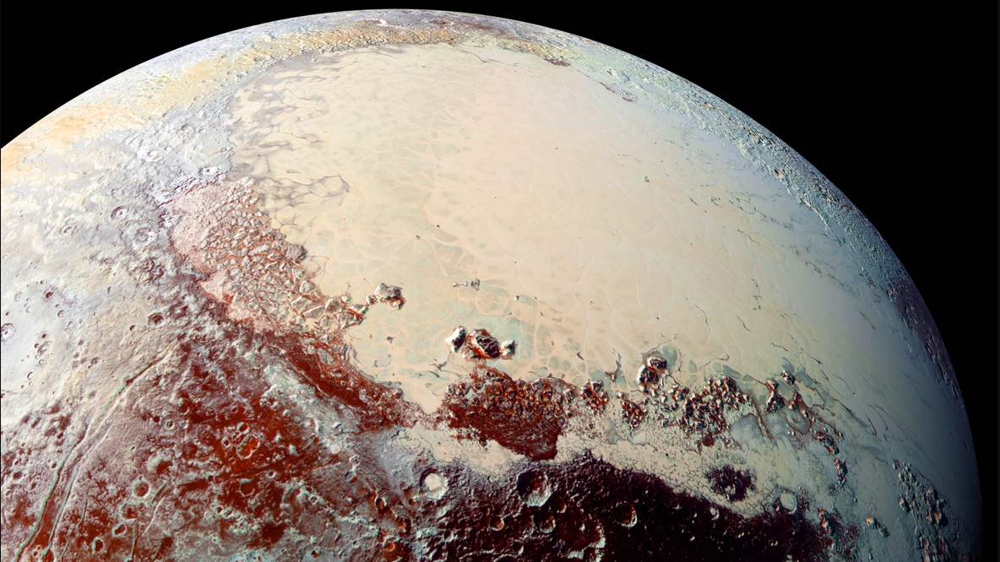
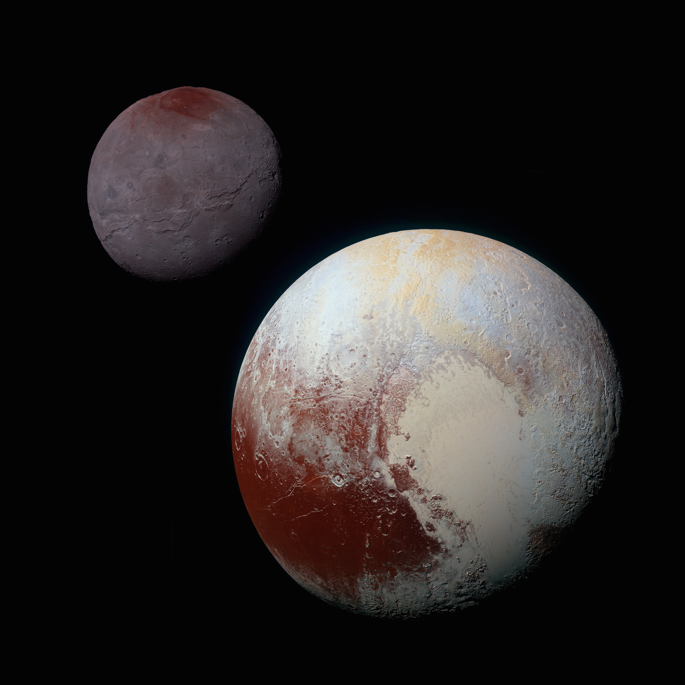

• Type : Planète naine / Objet transneptunien
• Diamètre : 2 377 km (environ 1/5 de celui de la Terre)
• Distance du Soleil : 5,9 milliards de km en moyenne (39,5 unités astronomiques)
• Durée d'un jour : 6 jours et 9 heures
• Durée d'une année : 248 années terrestres
• Nombre de satellites : 5 lunes confirmées (Charon, Nix, Hydra, Kerberos, Styx)
• Température : -229°C (moyenne de surface)
• Atmosphère : Très ténue, principalement azote, méthane et monoxyde de carbone
Pluton a été découverte en 1930 par l'astronome américain Clyde Tombaugh et a été considérée comme la neuvième planète du système solaire pendant 76 ans. En 2006, l'Union Astronomique Internationale a redéfini ce qu'est une planète, et Pluton a été reclassée comme "planète naine". Son nom vient du dieu romain des enfers, suggéré par Venetia Burney, une écolière de 11 ans d'Oxford, en Angleterre.
Malgré sa rétrogradation, Pluton reste l'un des corps célestes les plus fascinants et emblématiques de notre système solaire, et sa visite par la sonde New Horizons en 2015 a révélé un monde bien plus complexe et actif que ce que les scientifiques avaient imaginé.
Pluton est principalement composée de roches et de glaces, avec une surface dominée par de l'azote gelé, du méthane et du monoxyde de carbone. Les images de New Horizons ont révélé une diversité géologique surprenante : des montagnes de glace d'eau atteignant 3 500 mètres de hauteur, des plaines glacées lisses (comme la région en forme de cœur nommée Tombaugh Regio), des terrains anciens fortement cratérisés, et des preuves de processus géologiques récents.
Contrairement aux attentes, Pluton montre des signes d'activité géologique récente, ce qui est surprenant pour un petit corps céleste aussi éloigné du Soleil. Cette activité pourrait être alimentée par la chaleur résiduelle de sa formation ou par la désintégration radioactive d'éléments dans son noyau rocheux.
Pluton possède une atmosphère très ténue qui varie considérablement au cours de son orbite excentrique. Lorsqu'elle est plus proche du Soleil, une partie des glaces de sa surface se sublime, créant une atmosphère temporaire. En s'éloignant, ces gaz regèlent et retombent sur la surface.
Cette atmosphère, bien que très fine (environ 100 000 fois moins dense que celle de la Terre), crée des phénomènes météorologiques comme des brumes et potentiellement des vents qui sculptent certaines formations de surface. Les images de New Horizons ont révélé des couches de brume s'étendant jusqu'à 150 km au-dessus de la surface.
Pluton forme avec sa plus grande lune, Charon, ce qu'on appelle un système binaire. Charon est si grande par rapport à Pluton (environ la moitié de son diamètre) que le centre de masse du système se trouve à l'extérieur de Pluton, ce qui signifie que les deux corps tournent l'un autour de l'autre. Ils sont également en rotation synchrone, se montrant toujours la même face.
Outre Charon, Pluton possède quatre petites lunes : Nix, Hydra, Kerberos et Styx, toutes découvertes entre 2005 et 2012. Ces petites lunes ont des formes irrégulières et des orbites complexes influencées par la dynamique du couple Pluton-Charon.
Pendant des décennies, Pluton n'était qu'un point flou même dans les meilleurs télescopes. La première carte détaillée de sa surface a été créée à partir d'observations du télescope spatial Hubble dans les années 1990, montrant des régions claires et sombres mais peu de détails.
La mission New Horizons de la NASA, lancée en 2006, a transformé notre compréhension de Pluton lors de son survol historique en juillet 2015. Cette mission a fourni les premières images haute résolution de Pluton et de ses lunes, révélant un monde étonnamment complexe et géologiquement actif.
Les données de New Horizons continuent d'être analysées, et aucune autre mission vers Pluton n'est actuellement programmée, bien que plusieurs concepts aient été proposés pour des orbiteurs ou des atterrisseurs qui pourraient étudier ce monde fascinant plus en détail à l'avenir.

Tombaugh Regio, la célèbre région en forme de cœur de Pluton, photographiée par New Horizons

Les montagnes de glace d'eau de Pluton, atteignant jusqu'à 3 500 mètres de hauteur

Montage montrant Pluton et sa plus grande lune Charon à l'échelle et avec leurs couleurs réelles
Chez Cosmos Explorer, nous proposons plusieurs façons de découvrir et d'explorer la fascinante planète naine Pluton :
• Exposition "New Horizons" : Notre exposition permanente présente les images spectaculaires et les découvertes de la mission New Horizons, avec des modèles détaillés de Pluton et de ses lunes.
• Exploration virtuelle : Notre simulateur de réalité virtuelle vous permet de "survoler" la surface de Pluton et d'explorer ses caractéristiques géologiques uniques comme si vous y étiez.
• Conférences "Au-delà de Neptune" : Assistez à nos présentations sur Pluton et les autres objets transneptuniens, et découvrez les débats sur la définition des planètes.
• Atelier "Construisez votre système plutonien" : Une activité éducative où vous pouvez créer un modèle à l'échelle de Pluton et de ses lunes.
Pour plus d'informations sur nos programmes d'exploration de Pluton, consultez notre page d'exploration ou contactez-nous.